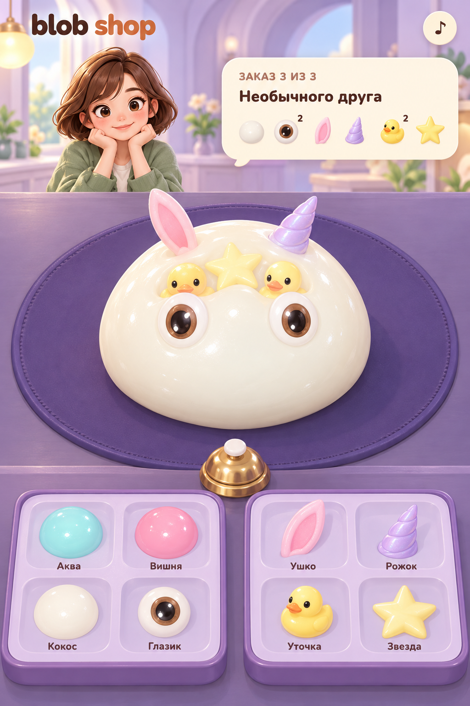
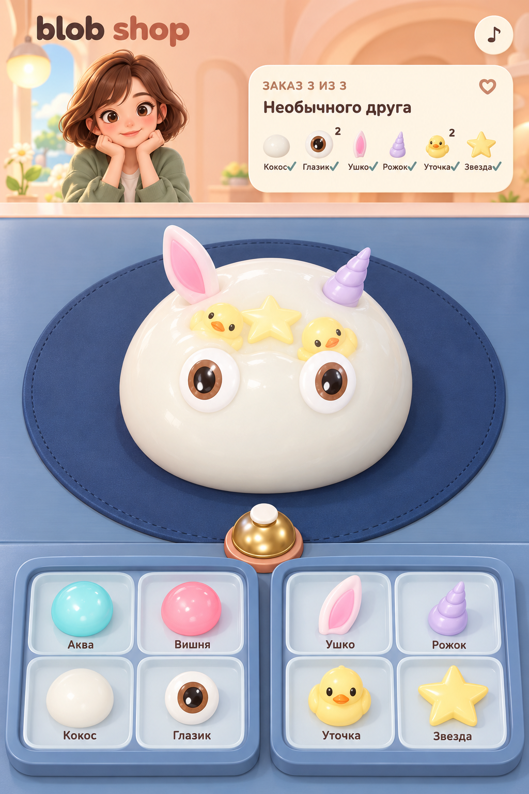
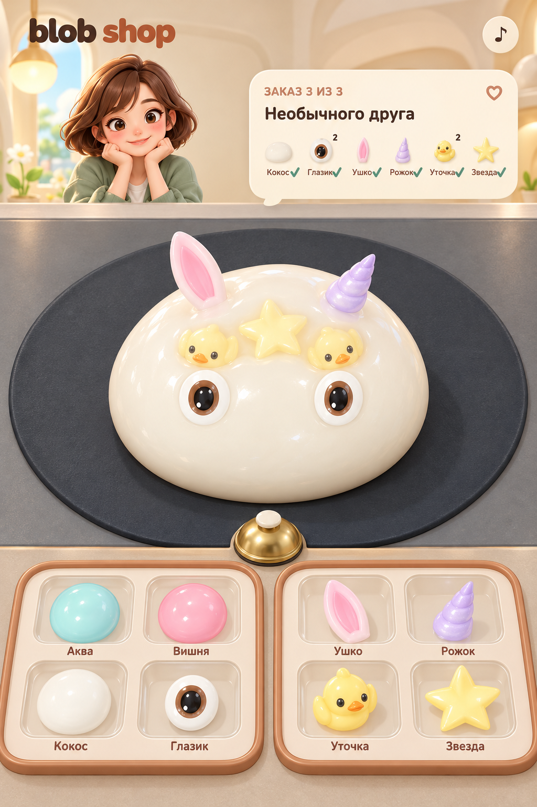

1. Черничная мастерскаяЛавандовый фон и насыщенная черничная подложка. Самый сказочный вариант.
3. Персик и индигоТёплый персиковый фон и холодное синее рабочее поле. Рекомендованный баланс уюта и контраста.
5. Сливочный графитСливочный фон и графитовая подложка. Самый нейтральный фон для цветных блобов.